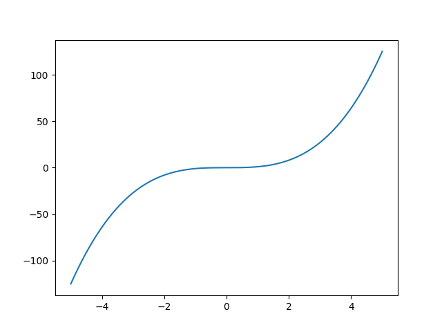

Motivation
Currently the physical chemistry is frequently taught in a classical way, meaning that simplified mathematical models are used to allow analytical solutions for given problems. Despite being a brilliant tool to demonstrate the power of calculus (which is usually taught at the same time or a semester before physical chemistry) it suffers from incompleteness. Truly, the world we are living in can not be efficiently described by models like an ideal gas, which are still of great interest for pedagogical purposes. On the other hand, more complex models, even though more successful in nature behavior prediction, can not be solved analytically and rely on numerical methods for finding answers.
Author has been deeply disappointed by the fearful attitude to computers of both students and tutors which takes place in the physical chemistry classes. Even in the rare cases when numerical methods were actually applied to chemical problems, they were limited either to proprietary software which is too expensive and thus unavailable for the majority of students or to custom automated routines which hide the solving methods and "magically" give answers. Another extreme is teaching students to solve problems in the MS Excel which is, again, may be unavailable due to its proprietary nature and is extremely inefficient for solving any advanced problems.
These issues have inspired the author to prepare a small set of materials that could be helpful to anyone, studying physical chemistry. The Python programming language will be used here. It was selected because of its simplicity, stability, good support in scientific community and freedom. The program, written in Python will run on any operational system (if Python is installed), which provides additional flexibility.
This material is structured into three parts:
-
Introduction to programming with Python.
It is understandable that almost all of the chemistry students have no background in programming, and could be afraid of it. In this chapter the minimal subset of Python features needed for chemist will be explained.
-
Numerical methods and how to use them in Python Various numerical methods, useful for physical chemistry will be explained without going into details. Expect mostly practical point of view.
-
Formulating physical chemistry problems numerically Here actual examples of the problems solution will be given.
Such structuring has been chosen to separate the educational parts from the practical ones to allow anyone who is already familiar with programming or with numerical methods to skip them and proceed to the most useful part.
Python programming basics
To get started, firstly Python need to be installed, which could be easily done by following instructions from official website. This will create minimal setup, enough for work. Still, more complex program, called Spyder IDE (for Integrated Development Environment) is much more convinient to use. Here and in following parts it is assumed that reader uses Python 3.7, which is the latest version of the software at the moment of writing. Some examples may use the functionality of Spyder, nevertheless they could be done in any preferred code editor.
Any computer program is nothing more than a sequence of simple commands. The programming languages are divided into two main cathegories: compiled and interpreted. The formers are languages which are directly translated into machine code, that runs on real hardware. Nevertheless this is the only way to efficiently utilize computational resources it requires much more care and experience. The second type, interpreted languages are actually commands to another program, called interpreter. This gives, at the price of speed, ability to make programming much closer to the human thinking.
As a simple example, lets start with the following program:
print("This is")
print("Physical")
print("Chemistry")
The output of this command sequence will be:
This is
Physical
Chemistry
As you may guess command print prints the string to the console.
The parenthesis means that print is a function which is called:
print - function name
print() - function call
This syntax is inspired from the mathematics, where arguments are written in parenthesis: f - function f(x) - function with argument x
Similarly, in Python functions may have arguments, but in contrast to math, function are not necessary returns value. This is sometimes called procedure, i.e. the piece of code which does something useful.
Thus command
print("Chemistry")
means to call the function (indicated by parenthesis), named print with argument "Chemistry".
Data types
Why "Chemistry" is enclosed in the quotation mark? This follows from the so called type system. Due to inability of machine to handle any data which is entered, the types are intriduced, which describe how to work with different information. With some imagination, similar concept could be found in math, for example a real number, complex number, vector, matrix, etc. Any of this entities is a type, i.e. a set of operations are defined for them. For example it is known how to add real numbers or matrices, but it is nonsense to add matrices to reals. On the other hand, real and complex number could be added if we will think of real as of complex with zero imaginary part. This thinking is called type casting in computer science and is very useful sometimes.
Python is a dynamically typed language, which means that in majority of cases it is not needed neither to bother with data type nor to define it explicitly. The program will automatically understand what is meant.
a = 1.0 # float
b = 42 # integer
c = 2.0+1j # complex
s = "Chemistry" # string
t = True # boolean
This are the most commonly used data types. Float, recognized by dot, integer, a simple number, complex, having both real and imaginary part, string which should be enclosed into "double" or 'single' quotation marks (but don't mix them!) or boolean which could have only two values, True and False. The letters here are variables, which are aliases for the given numbers. Now, it is possible to use this variables to perfrom basic mathematical operations.
As an example, in Spyder click on File tab and create new file.
The text editor should open new tab, named "untitled.py" or similar.
Enter the commands from above and
click on the green triangle on top of the window to run the
file.
Spyder will ask for filename to save the program, which
should be something reasonable. After saving, the program
will run and five variables will be created in the computer memory.
In the
right bottom corner of the Spyder there is a window, called
IPython console. It is very useful for evaluating of the small
commands without need to completely re-run the program.
Now enter b+b to the console. As the script (Python programs
are frequently called scripts) have been already run, the variables
exists in memory and could be manipulated from the console.
In[7]: b+b
Out[7]: 84
In[8]: a+a
Out[8]: 2.0
In [9]: a+b
Out[9]: 43.0
Note that if two integer numbers are added, the result is integer as well. In case of two floats, result is a float, but in case of float and integer result is casted to the float, i.e. integer 42 is understood as the float 42.0.
Another important consequnece of typing system is additional error detection.
In [12]: a+s
Traceback (most recent call last):
File "<ipython-input-12-4d0c24e003cf>", line 1, in <module>
a+s
TypeError: unsupported operand type(s) for +: 'float' and 'str'
This clearly indicates that it is nonsence to add number to a string. Still, typing error can not provide 100 % error detection, because conviniece is on the first place. The language definces some operations, which are not mathematically correct, but very useful, such as string addition:
In [13]: s+s
Out[13]: 'ChemistryChemistry'
Still, in majority cases it is not necessary to bother much about types.
Data structures
In general, we use computers to process some data. This is why programming languages have developed rich system of data structures.
- Lists
Lists are sequences of variables of same or different types:
lst1 = [1, 2, 3]
lst2 = [1.0, 2.0, 3.0]
lst3 = [1, 2.0, "Python"]
They allow to store information, which should be grouped together. New items could be appended to the lists using a method append. Method is a function which is bound to the own data structure. E.g. to add the number 5 to above-defined lst1.
In [16]: print(lst1)
[1, 2, 3]
In [17]: lst1.append(5)
In [18]: print(lst1)
[1, 2, 3, 5]
To insert number 6 to other position method insert exists:
In [20]: lst1.insert(2, 6)
In [21]: print(lst1)
[1, 2, 6, 3, 5]
Obtained list could be sorted with sort:
In [22]: lst1.sort()
In [23]: lst1
Out[23]: [1, 2, 3, 5, 6]
- Tuples
Tuples are similar to lists but immutable, i.e. after definition they could not be changed anymore.
tpl=(2, 4)
They are useful for multiple definitions:
(a, b, c) = (1, 2, 3)
This will create three variables in a one string.
- NumPy types
Vanilla Python is not well suited to scientific calculations due to absence of arrays, special data structures which efficiently handles sequences of the same type, which could consist of millions of units. This is why NumPy (numerical Python) module was developed. It introduces few important types, but worth separate discussion in following chapter.
Iterating
One of the most important structures in programming are loops, which are a method to make a computer performs large amount of routine operations. The most important type of loop in Python are for loops, usage of which are demonstrated below:
for elem in lst1:
print(elem)
1
2
3
5
6
The main idea here is that for loop splits an iterable (common name for data types, which could be split, such as list in that case) into elements, and assign the value of this element to variable, which is specified in the loop declaration (elem in that case). This is very powerful programming technique. E.g. to calculate the seconds powers of the numbers in list:
for elem in lst1:
print(elem**2)
1
4
9
25
36
Or to calculate the sum of list:
sm = 0 # initialize the variable to hold the sum
for elem in lst1:
sm += elem # add value of each element to the sum
print(sm) # output result
Note that the body of cycle (the part of code that is executed on every iteration is separated by tab or four spaces), while parts, that should be executed only once (sum initialization and printing) are not separated.
Indexing
Iterables could be indexed with the square brackets, with numbering starting at zero.
In [49]: print(lst1)
[1, 2, 3, 5, 6]
In [50]: print(lst1[0])
1
In [51]: print(lst1[3])
5
Functions
In programming, functions could have two meanings without clear difference between them. First kind is a function in mathematical sence, which takes an input and returns output, for example:
def square(nmbr):
result = nmbr**2
return result
This function takes argument, which becomes available inside the function body under alias nmbr, creates new variable result, squares the number ( double asterisk is a raising to power operator), puts the square into the result variable and returns it. The body of function is separated by the tabs or spaces in the same manner as for loop. Keyword return means that this value is the output of the function. Now, it can be used as:
In [41]: var = square(5)
In [42]: print(var)
25
Another types of functions are a pieces of code, which just executed, but does not return anything.
def greeting():
print("Hello, user")
In [55]: greeting()
Hello, user
It is possible combine both approaches:
def greeting(name):
print("Hello", name)
In [61]: greeting("Alex")
Hello Alex
NumPy basics
NumPy is a Python module, developed to simplify scientific computations. It is part of SciPy stack, which provides wide variety of routines for linear algebra, Fourier tranformation, optimization, statistics, etc. It brings the power of mathematical software like MATLAB and beyond, combines it with flexibility and convinience of Python and is available under open-source license. These factors make SciPy a perfect choice for educational and academic computations.
Module
Python allows code structuring by packaging the files into modules. Modules need to be installed prior to use. The most convinient way to do it is to use PIP, the Python package manager:
pip install <package_name>
E.g. to install NumPy
pip install numpy
In case Spyder is used, NumPy, SciPy should be already installed.
NumPy array
The data structure, which is in the heart of the whole SciPy ecosystem. It is an array of the data of same type. To create such array:
import numpy as np # load the NumPy module and give it alias np
arr = np.array([0, 1, 2, 3, 4])
print(arr)
[0 1 2 3 4]
Despite array looks same as Python list, it provides lots of useful methods. To see them, in IPython console type the name of array, add dot and press tab. The pop-up with the list of methods should occur:

Full list of methods is available in the official documentation
A few examples:
In [65]: arr.mean()
Out[65]: 2.0
In [66]: arr.sum()
Out[66]: 10
In [67]: arr.var()
Out[67]: 2.0
In [68]: arr.prod()
Out[68]: 0
One of the most widely used features is paralell computation, i.e. application of function to the array will lead to application of it to every element of an array. In the previous chapter it was shown how to calculate squares of the array:
for elem in lst1:
print(elem**2)
The same problem in NumPy could be solved in a very elegant way:
In [71]: np.power(arr, 2)
Out[71]: array([ 0, 1, 4, 9, 16])
(Here np.power is a function, which raises the input to the given power) Or even simplier:
In [72]: arr**2
Out[72]: array([ 0, 1, 4, 9, 16])
This is a typical way to plot a function in Python:
import numpy as np # load the NumPy module and give it alias np
import matplotlib.pyplot as plt # load pyplot submodule and give it alias plt
x = np.linspace(-5, 5, 1000) # create array of 1000 points, equally spaced in the range [-5, 5]
y = np.power(x, 3) # apply the function to the array to get y values
plt.plot(x, y) # plot x, y pairs
plt.show() # show the plot
This code will produce following image: 
NumPy arrays are not limited to 1D case. They could have arbitrary dimensionality, such as matrices:
A = np.array([[1, 0, 0],
[0, 1, 0],
[0, 0, 2]])
The size of matrix could be obtained with shape method:
In [9]: A.shape
Out[9]: (3, 3)
The linear algebra routines could be used for matrix multiplication:
A = np.array([[1, 0, 0],
[0, 1, 0],
[0, 0, 2]])
b = np.array([1, 1, 1])
print(np.dot(A, b)) # dot product A*b
[1 1 2]
inversion:
In [24]: np.linalg.inv(A)
Out[24]:
array([[1. , 0. , 0. ],
[0. , 1. , 0. ],
[0. , 0. , 0.5]])
Or to solve system of linear equations:
res = np.linalg.solve(A, b) # solve system of linear equations A*x = b
print("Solution:", res) # x
print("Verification:", A@res) # @ is a dot product operator
Solution: [1. 1. 0.5]
Verification: [1. 1. 1.]
NumPy array has unusually powerful indexing system:
A = np.array([[1, 2, 3],
[4, 5, 6],
[7, 8, 9]])
In[5]: A[0,1] # first row, second column
Out[5]: 2
In [6]: A[:,1] # all rows, second column
Out[6]: array([2, 5, 8])
In [7]: A[2,:] # third row, all columns
Out[7]: array([7, 8, 9])
In [8]: A[0:2,0:2] # rows from first to third, columns from first to third
Out[8]:
array([[1, 2],
[4, 5]])
In [11]: mask = [True, False, True] # create boolean mask
In [12]: A[mask,:] # take rows according to mask, all columns
Out[12]:
array([[1, 2, 3],
[7, 8, 9]])
Overall, it is difficult to say which functionality is important for chemist and which does not. In any case, reading documentation might be a good idea. Also, Python has a developed community, and almost any question can be answered by simple searching for it in the web.